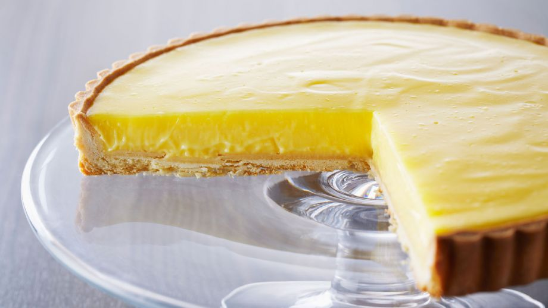
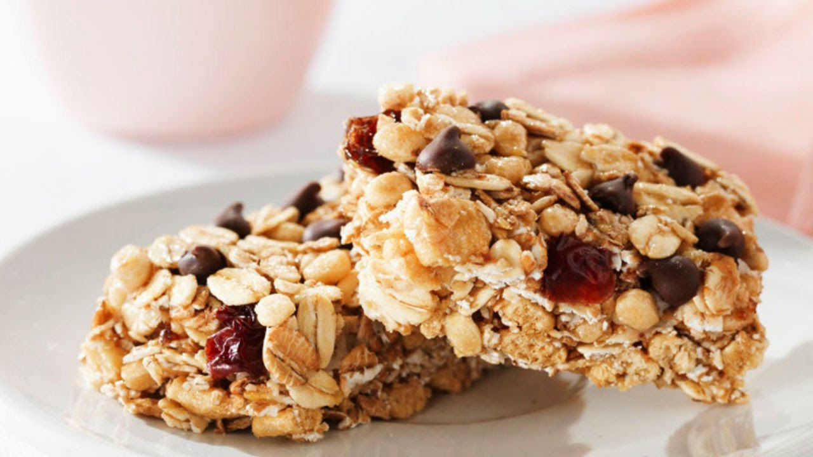

Postres
¡Hola!
En esta página encontrarás una serie de postres que se encuentran entre mis favoritas. Entre ellas puedes encontrar recetas como la del tiramisú, un postre clásico y elengante, o la tarta de zanahoria perfecta para tiempos fríos
¡Espero que disfrutes!
¡Atención!
Recuerda que ninguna de estas recetas me pertenece. Esta es una simple copilación de mis recetas favoritas. Encontrarás la fuente de las recetas al final de cada una o haciendo clic en la foto del plato.
- Tiramisú
- Tarta de limón
- Barrita de granola
- Tarta de zanahoria

Tiramisú
- Tiempo: Medio
- Dificultad: Medio
- Raciones: 4
| Ingredientes |
Cantidad |
| Yemas de huevo |
3 |
| Claras de huevo |
2 |
| Azúcar |
1/4 taza |
| Extracto de vainilla |
1 cucharadita |
| Queso mascarpone |
1 taza |
| Café |
1/2 taza |
| Nata montada |
3/4 taza
|
| Soletillas |
24 unidades |
| Chocolate negro |
Para decorar |
| Azúcar | 2 cucharaditas |
- Para comenzar, vamos a preparar la crema de mascarpone. En un bol, batimos las yemas de huevo con 1/4 de taza de azúcar y una cucharada de vainilla. Ponemos la mezcla a cocer al baño maría.
- Apartamos del fuego e incorporamos el queso mascarpone.
- Seguido, en un bol, batimos las claras de huevo y las añadimos a la mezcla de queso. Dejamos reposar en la nevera para que el queso recupere su firmeza.
- Por otro lado, vamos a preparar el sirope de café. Para ello, mezclamos el café caliente con una cucharada de azúcar.
- Por último, vamos a montar el tiramisú. Sumergimos las soletillas en el sirope de café. Dejamos que se empapen y las sacamos.
- Emplatamos las soletillas mojadas las emplatamos y las espolvoreamos con una fina capa de chocolate negro rallado. Cubrimos con una capa de crema, otra de chocolate rallado y un poco de nata montada.
- Decoramos con cacao en polvo y servimos.

- Dificultad: Medio
- Tiempo: Alto
- Raciones: 6
Para la tarta
| Ingredientes |
Cantidad |
| Mantequilla sin sal |
140 gramos |
| Azúcar glas tamizado |
140 gramos |
| Yema de huevo cocida |
1 |
| Yema de huevo |
1 |
| Harina de repostería tamizada |
1 3/4 taza |
| Extracto de vainilla |
1/2 cucharadita |
| Sal |
1/4 cucharadita |
Para el relleno de crema de limón
| Ingredientes |
Cantidad |
| Huevos |
3 |
| Yemas de huevo |
3 |
| Azúcar |
3/4 taza |
| Ralladura de limón |
1 cucharada |
| Zumo de limón |
2/3 taza |
| Mantequilla sin sal en trozos |
2/3 taza |
| Nata agria |
1/2/taza |
Preparación
- En primer lugar, vamos a preparar la masa sablé, que es la base de la tarta.
- Mezclamos en un bol la mantequilla con el azúcar glas tamizado.
- Añadimos a la mezcla la yema de huevo cruda y la yema de huevo cocida rallada. Agregamos también el extracto de vainilla y mezclamos todo bien.
- Después, tamizamos la harina con la sal y lo agregamos de una vez a la mezcla de mantequilla y huevo. Removemos. Envolvemos la masa en plástico y la refrigeramos en la nevera durante 2 horas.
- Enharinamos la mesa de trabajo y ponemos encima la masa. Le damos forma de disco, amasamos un poco y la estiramos de nuevo.
- Ponemos la masa estirada en la base de un molde de paredes rectas. Con el rodillo eliminamos la masa sobrante. Pinchamos con un tenedor y la reservamos en la nevera durante, al menos, 30 minutos.
- Precalentamos el horno a una temperatura de 170ºC.
- Horneamos la masa sablé a 170ºC durante 20 minutos, hasta que el borde de la masa se ponga dorado.
- Mientras esto se cuece, vamos a preparar la crema de limón. En un cazo al fuego, batimos los huevos enteros con las yemas, el azúcar, la ralladura y el zumo de limón.
- Agregamos a la mezcla la mantequilla. Batimos y dejamos que la crema espese durante 5 minutos. Colamos la crema sobre un bol con la nata agria. Removemos.
- Cuando la masa sablé esté dorada y fría, la rellenamos con la crema de limón templada. La reservamos en la nevera durante unas 2 horas, para que cuaje.
- Servimos.

- Dificultad: Bajo
- Tiempo: Medio
- Raciones: 6
| Ingredientes |
Cantidad |
| Copos de avena |
120 gramos |
| Copos de quinoa |
100 gramos |
| Miel |
170 gramos |
| Aceite de coco virgen |
45 gramos |
| Naranja en ralladura |
1 |
| Extracto de vainilla |
1 cucharadita |
| Canela en polvo |
1/2 cucharadita |
| Sal |
1 pizca |
| Semillas de calabaza peladas y tostadas |
50 gramos |
| Semillas de girasol peladas y tostadas |
30 gramos |
| Arándanos secos |
70 gramos |
| Pasas |
80 gramos |
Preparación
- Precalentamos el horno a una temperatura de 180ºC.
- Para comenzar, en una placa de horno, repartimos la avena y la quinoa. Mezclamos un poco. Horneamos a 180ºC durante 12 minutos para tostar los cereales.
- Por otro lado, vamos a hacer una base de jarabe. Para ello, mezclamos en un bol la miel, el aceite de coco, la canela, la vainilla y una pizca de sal.
- Ponemos los líquidos en un cazo al fuego y lo calentamos un poco, para fundir el aceite de coco.
- Entonces, agregamos la ralladura de naranja y apartamos del fuego.
- Ponemos en un bol los cereales tostados, las semillas y las frutas secas. Regamos con el jarabe y removemos, para que se impregne bien todo.
- En un molde rectangular engrasado y con papel vegetal, volcamos toda la masa. Con ayuda de una espátula presionamos un poco para comprimir la mezcla. Horneamos a 180ºC durante 15 minutos.
- Pasado el tiempo, dejamos enfriar y cortamos las barritas.
- Servimos.

Tarta de zanahoria
- Tiempo: Alto
- Dificultad: Medio
- Raciones: 4
| Ingredientes |
Cantidad |
| Harina |
210 g |
| Huevo |
3 |
| Levadura |
2 cucharaditas |
| Aceite |
180 ml |
| Canela |
2 cucharaditas |
| Zanahorias |
225g |
| Manzana |
210g |
| Pasas |
90g |
| Azúcar |
180g |
| Nueces peladas y picadas | 1 puñado |
| Mantequilla a temperatura ambiente |
125g |
| Azúcar glas |
300g |
| Queso de crema |
125g |
- Precalentamos el horno a 180ºC. Engrasamos con mantequilla y enharinamos los moldes
- Tamizamos la harina con la canela y la levadura. Reservamos.
- Rallamos las zanahorias finamente, y pelamos y picamos del mismo grosor la manzana. Reservamos.
- En un bol, batimos los huevos con el azúcar y el aceite. Incorporamos la harina tamizada con la canela y la levadura y mezclamos hasta obtener una masa homogénea.
- Agregamos la manzana y la zanahoria rallada. Cuando esté bien mezclado, añadimos las pasas y las nueces.
- Pesamos la masa y la repartimos equitativamente entre los tres moldes engrasados. Horneamos a 180ºC durante 25-30 minutos o hasta que un palillo salga limpio.Tras sacarlos, los dejamos 5 minutos en la bandeja de horno y después los traspasamos a una rejilla.
- Por último, vamos a preparar la crema. Para ello, tamizamos el azúcar glas y lo colocamos en un bol junto con la mantequilla en pomada. Batimos a máxima velocidad durante 5 minutos o hasta que la mezcla aumente de volumen, se aclare y tenga una textura que recuerde a un helado. Incorporamos el queso y batimos 3 minutos más.
- Introducimos la mezcla en una manga pastelera con una boquilla de estrella. En un plato colocamos una base de bizcocho. La rellenamos con la crema en forma de espiral empezando desde el centro. Colocamos la segunda capa y repetimos. Terminamos decorando la última capa en forma de pequeñas rosetas. Colocamos nueces encima.
Si tienes cualquier duda puedes contactarme escribiendo un cometario.